Vaccine Response Analysis#
Dataset: BNT162b2 vaccination time course (GEO GSE171964)
Background#
This dataset profiles PBMCs collected at baseline and after BNT162b2 vaccination, capturing short‑term immune dynamics.
Important Methodological Notes Single‑arm longitudinal study:
All participants received vaccine
Analyses focus on within‑participant changes over time
We do not estimate treatment effects versus an unvaccinated control
Time axis:
We use Day 0 vs Day 7 as the primary comparison
Analysis strategy:
Participant‑level aggregation avoids treating cells as independent
Cross‑sectional summaries are descriptive; inference uses paired comparisons
Multiple testing is controlled using FDR (alpha = 0.25)
Sampling and scope:
We restrict to participants with both Day 0 and Day 7 samples
1. Setup#
[1]:
import warnings
warnings.filterwarnings('ignore', category=FutureWarning)
# Note: We do NOT suppress UserWarning — the package issues useful
# recommendations (e.g. use_bootstrap=True for small samples)
import pandas as pd
import numpy as np
import matplotlib.pyplot as plt
plt.rcParams["axes.grid"] = False
import seaborn as sns
sns.set_style("white")
sns.set_context("notebook")
import scanpy as sc
import sctrial as st
import scipy.sparse as sp
pd.options.mode.chained_assignment = None
# Configuration
SEED = 42
MIN_PAIRED = 4
MIN_GENES_FOR_SCORE = 5
FDR_ALPHA = 0.25 # Exploratory threshold; use 0.05 for confirmatory analyses
def _fmt_fdr(v):
"""Format FDR/p-value: scientific notation for very small values."""
return f"{v:.2e}" if v < 0.001 else f"{v:.3f}"
2. Data Loading and Processing#
[2]:
# Dataset loader and helpers (from sctrial)
# Also available at top-level: st.load_vaccine_gse171964, st.verify_paired_participants, st.ensure_fdr
from sctrial.datasets import load_vaccine_gse171964, verify_paired_participants, ensure_fdr
from statsmodels.stats.multitest import multipletests
2.1 Load processed AnnData#
[3]:
adata = load_vaccine_gse171964(
seed=SEED,
allow_download=True,
)
print(adata)
print("Obs columns:")
print(sorted(adata.obs.columns.tolist()))
AnnData object with n_obs × n_vars = 78488 × 20102
obs: 'pt_id', 'day', 'clustnm', 'sample_id'
uns: 'processing_params'
layers: 'counts'
Obs columns:
['clustnm', 'day', 'pt_id', 'sample_id']
2.2 Quick exploratory summaries#
[4]:
print("Days:", adata.obs["day"].unique())
print("Participants:", adata.obs["pt_id"].nunique())
print("Cell types:", adata.obs["clustnm"].nunique())
# Participants per day (before pairing restriction for analysis)
pt_per_day = adata.obs.groupby("day")["pt_id"].nunique().sort_index()
print("Participants per day:")
print(pt_per_day)
# Cell counts
eday_counts = adata.obs["day"].value_counts().sort_index()
ct_counts = adata.obs["clustnm"].value_counts().head(15)
fig, axes = plt.subplots(1, 2, figsize=(10, 4))
eday_counts.plot(kind="bar", ax=axes[0], title="Cells by day")
ct_counts.plot(kind="bar", ax=axes[1], title="Top cell types")
plt.tight_layout(); plt.show()
Days: [0 7]
Participants: 6
Cell types: 18
Participants per day:
day
0 6
7 6
Name: pt_id, dtype: int64
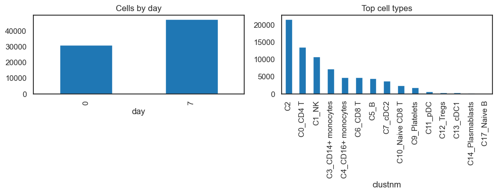
3. Trial Design and Timepoint Strategy#
[5]:
# Ensure log1p CPM
if "log1p_cpm" not in adata.layers:
adata = st.add_log1p_cpm_layer(adata, counts_layer="counts", out_layer="log1p_cpm")
# Standardize metadata
adata.obs["visit"] = adata.obs["day"].astype(str)
adata.obs["participant_id"] = adata.obs["pt_id"].astype(str)
adata.obs["cell_type"] = adata.obs["clustnm"].astype(str)
visit_col = "visit"
visits = [v for v in ["0", "7"] if v in adata.obs[visit_col].unique()]
# Participant-level pairing
participant_summary = (
adata.obs.groupby("participant_id")[visit_col].apply(set).reset_index()
)
participant_summary["has_day0"] = participant_summary[visit_col].apply(lambda x: "0" in x)
participant_summary["has_day7"] = participant_summary[visit_col].apply(lambda x: "7" in x)
participant_summary["is_paired"] = participant_summary["has_day0"] & participant_summary["has_day7"]
paired_ids = set(participant_summary.loc[participant_summary["is_paired"], "participant_id"])
n_paired = len(paired_ids)
print(f"Paired participants (0 vs 7): {n_paired}")
# Analysis subset: paired participants only
adata_analysis = adata[adata.obs["participant_id"].isin(paired_ids)].copy()
print(f"Analysis subset cells: {adata_analysis.n_obs}")
# Covariates (if available)
candidate_covariates = ["age", "sex", "batch", "site"]
covariates = [c for c in candidate_covariates if c in adata.obs.columns]
print("Covariates available (not modeled here):", covariates)
# Design object for a SINGLE-ARM longitudinal study.
# All participants received vaccine — there is no control arm.
# arm_col=None tells sctrial this is a single-arm design.
# Analyses use within_arm_comparison() for paired pre→post inference,
# NOT between-arm DiD.
design = st.TrialDesign(
participant_col="participant_id",
visit_col=visit_col,
arm_col=None, # Single-arm study — no arm column
celltype_col="cell_type",
)
# Run diagnostics
print("\n--- Trial Diagnostics ---")
diag = st.diagnose_trial_data(adata_analysis, design)
display(diag)
Paired participants (0 vs 7): 6
Analysis subset cells: 78488
Covariates available (not modeled here): []
--- Trial Diagnostics ---
{'n_cells': 78488,
'n_genes': 20102,
'n_participants': 6,
'n_visits': 2,
'visits': ['0', '7'],
'paired_participants': {('0', '7'): 6},
'cells_per_participant_visit_mean': 6540.666666666667,
'cells_per_participant_visit_median': 5350.5,
'cells_per_participant_visit_min': 3464,
'n_celltypes': 18,
'celltype_distribution': {'C2': 21632,
'C0_CD4 T': 13633,
'C1_NK': 10816,
'C3_CD14+ monocytes': 7312,
'C4_CD16+ monocytes': 4879,
'C6_CD8 T': 4862,
'C5_B': 4597,
'C7_cDC2': 3878,
'C10_Naive CD8 T': 2464,
'C9_Platelets': 1883,
'C11_pDC': 741,
'C12_Tregs': 465,
'C13_cDC1': 389,
'C14_Plasmablasts': 297,
'C17_Naive B': 222,
'C16_NK T': 204,
'C15_HPCs': 184,
'C8_CD14+BDCA1+PD-L1+ cells': 30},
'warnings': [],
'recommendations': ['Sample size is small; use bootstrap inference (use_bootstrap=True)']}
3.1 Exploratory plots of cell types per visit#
[6]:
ct_visit = (
adata_analysis.obs
.groupby([design.celltype_col, design.visit_col], observed=True)
.size()
.reset_index(name="n_cells")
)
top_ct = adata_analysis.obs[design.celltype_col].value_counts().head(10).index
ct_visit_top = ct_visit[ct_visit[design.celltype_col].isin(top_ct)].copy()
plt.figure(figsize=(10, 4))
sns.barplot(data=ct_visit_top, x=design.celltype_col, y="n_cells", hue=design.visit_col)
plt.title("Top cell types by visit (paired participants)")
plt.xticks(rotation=45, ha="right")
plt.tight_layout(); plt.show()
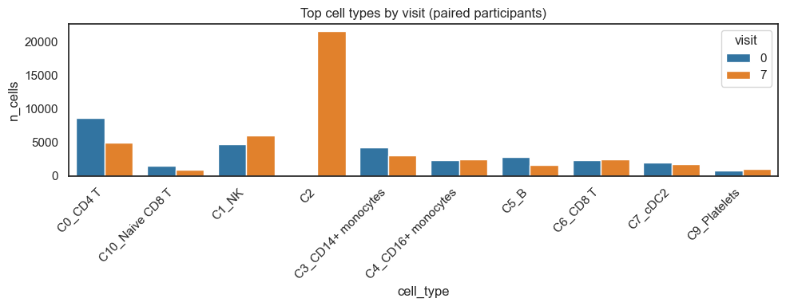
4. UMAPs of All Cell Types#
Here, we explore global structure across all cell types to understand broad immune landscape changes.
[7]:
# Compute UMAP on log1p CPM if missing
adata_umap = adata_analysis.copy()
adata_umap.X = adata_umap.layers["log1p_cpm"].copy()
if "X_umap" not in adata_umap.obsm:
sc.pp.pca(adata_umap)
sc.pp.neighbors(adata_umap)
sc.tl.umap(adata_umap)
sc.pl.umap(
adata_umap,
color=design.celltype_col,
legend_loc="right margin",
title="All cell types (paired participants)",
)
# Stratified UMAPs by visit
fig, axes = plt.subplots(1, len(visits), figsize=(12, 4))
if len(visits) == 1:
axes = [axes]
for i, vis in enumerate(visits):
sub = adata_umap[adata_umap.obs[design.visit_col] == vis].copy()
ax = axes[i]
if sub.n_obs > 0:
sc.pl.umap(sub, color=design.celltype_col, ax=ax, show=False, legend_loc=None, frameon=False)
ax.set_title(f"Day {vis}")
ax.set_aspect('equal')
else:
ax.set_axis_off()
plt.tight_layout(); plt.show()
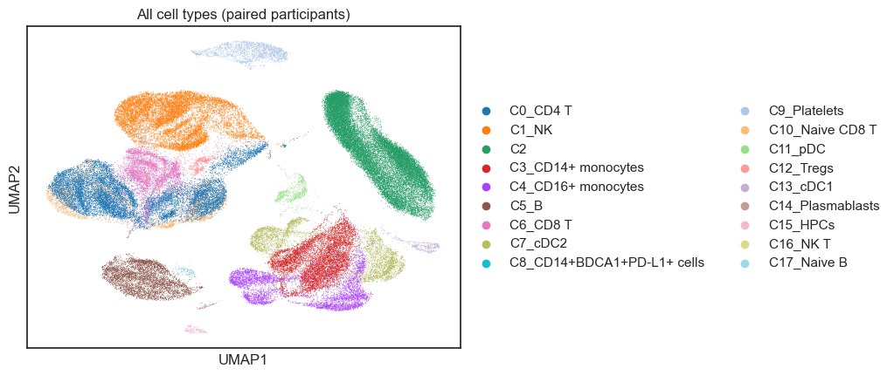
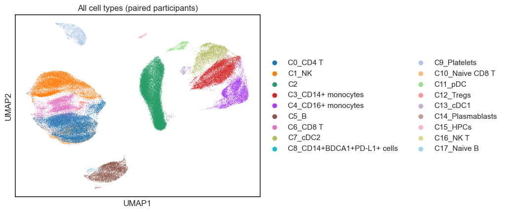
5. Module Scoring and Gene Panel#
Here, we define biologically motivated signatures and a focused gene panel for downstream within‑arm testing.
[8]:
available = set(adata_analysis.var_names)
# Define immunologically relevant gene sets for vaccine response
# Expanded to include T cell responses which are critical for vaccine immunity
raw_gene_sets = {
"B_Cell_Response": ["CD79A", "CD79B", "MS4A1", "MZB1", "XBP1", "JCHAIN", "IGHG1", "IGHA1"],
"IFN_Signature": ["ISG15", "IFI6", "IFIT1", "IFIT3", "MX1", "STAT1", "OAS1", "IRF7"],
"Inflammatory": ["S100A8", "S100A9", "LYZ", "VCAN", "IL1B", "CXCL8", "CCL2"],
"T_Cell_Activation": ["CD69", "CD38", "HLA-DRA", "ICOS", "IL2RA", "TNFRSF9"],
"Cytotoxic": ["GZMB", "GZMA", "PRF1", "GNLY", "NKG7", "IFNG"],
"Memory_T": ["IL7R", "TCF7", "LEF1", "CCR7", "SELL", "CD27"],
}
print("Gene set coverage:")
filtered = {}
for name, genes in raw_gene_sets.items():
present = [g for g in genes if g in available]
pct = len(present) / len(genes) * 100 if genes else 0
status = "OK" if len(present) >= MIN_GENES_FOR_SCORE else "SKIP"
print(f" {name}: {len(present)}/{len(genes)} genes ({pct:.0f}%) [{status}]")
if len(present) >= MIN_GENES_FOR_SCORE:
filtered[name] = present
if filtered:
adata_analysis = st.score_gene_sets(
adata_analysis, filtered, layer="log1p_cpm", method="zmean", prefix="ms_"
)
print(f"\nScored {len(filtered)} gene sets using zmean.")
else:
print(f"\nNo gene sets matched (min_genes={MIN_GENES_FOR_SCORE}); skipping module scoring.")
features = [c for c in adata_analysis.obs.columns if c.startswith("ms_")]
print("Module score features:", features)
# Panel genes for individual gene analysis (expanded)
panel_genes_all = [
# B cell
"CD79A", "CD79B", "MS4A1", "MZB1", "XBP1",
# IFN
"ISG15", "IFI6", "IFIT1", "MX1",
# Inflammatory
"S100A8", "S100A9", "LYZ", "VCAN",
# T cell activation
"CD69", "CD38", "IL2RA",
# Cytotoxic
"GZMB", "PRF1", "NKG7",
]
panel_genes = [g for g in panel_genes_all if g in available]
missing_panel = [g for g in panel_genes_all if g not in available]
print("\nPanel genes (available):", panel_genes)
if missing_panel:
print("Panel genes missing:", missing_panel)
Gene set coverage:
B_Cell_Response: 8/8 genes (100%) [OK]
IFN_Signature: 8/8 genes (100%) [OK]
Inflammatory: 7/7 genes (100%) [OK]
T_Cell_Activation: 6/6 genes (100%) [OK]
Cytotoxic: 6/6 genes (100%) [OK]
Memory_T: 6/6 genes (100%) [OK]
Scored 6 gene sets using zmean.
Module score features: ['ms_B_Cell_Response', 'ms_IFN_Signature', 'ms_Inflammatory', 'ms_T_Cell_Activation', 'ms_Cytotoxic', 'ms_Memory_T']
Panel genes (available): ['CD79A', 'CD79B', 'MS4A1', 'MZB1', 'XBP1', 'ISG15', 'IFI6', 'IFIT1', 'MX1', 'S100A8', 'S100A9', 'LYZ', 'VCAN', 'CD69', 'CD38', 'IL2RA', 'GZMB', 'PRF1', 'NKG7']
[9]:
# ============================================================================
# PAIRING VERIFICATION (package helper)
# ============================================================================
print("=" * 60)
print("PAIRING VERIFICATION (based on valid signature scores)")
print("=" * 60)
paired_info = verify_paired_participants(
adata_analysis.obs,
visit_col=visit_col,
visits=visits,
features=features,
participant_col="participant_id",
)
VALID_PAIRED_IDS = paired_info["paired_ids"]
N_VALID_PAIRED = paired_info["n_paired"]
print("")
print(f"Participants with valid Day0+Day7 scores for ALL features: {N_VALID_PAIRED}")
print(f"Total participants: {paired_info['n_total']}")
if paired_info["dropped_ids"]:
print(f"Dropped (missing visit or NaN features): {len(paired_info['dropped_ids'])}")
else:
print("All paired participants have valid scores ✓")
print("")
print(f"Using {N_VALID_PAIRED} validated paired participants for analyses.")
============================================================
PAIRING VERIFICATION (based on valid signature scores)
============================================================
Participants with valid Day0+Day7 scores for ALL features: 6
Total participants: 6
All paired participants have valid scores ✓
Using 6 validated paired participants for analyses.
6. Within-Arm Comparisons (Participant-Level)#
Here, we run paired within‑participant analyses to determine which module scores change from Day 0 to Day 7.
Bootstrap inference: With only 6 paired participants, cluster-robust asymptotic p-values are anti-conservative. We use
use_bootstrap=True(wild cluster bootstrap-t; Cameron et al. 2008) to obtain reliable p-values, standard errors, and confidence intervals. The bootstrap p-value replaces the analytical p-value as the primary inferential quantity.
[10]:
print("=" * 60)
print("WITHIN-ARM COMPARISONS: MODULE SCORES (Day 0 vs Day 7)")
print("=" * 60)
res_within = pd.DataFrame()
if features and len(visits) == 2:
ad_sub = adata_analysis[adata_analysis.obs["participant_id"].isin(VALID_PAIRED_IDS)].copy()
res_within = st.within_arm_comparison(
ad_sub,
arm="All",
features=features,
design=design,
visits=tuple(visits),
aggregate="participant_visit",
standardize=True,
use_bootstrap=True, # Recommended for small n (6 participants)
n_boot=999,
seed=SEED,
)
if res_within is not None and not res_within.empty:
# Use package helper for FDR correction
res_within = ensure_fdr(res_within, p_col="p_time", fdr_col="FDR_time")
display_cols = [
"feature", "beta_time", "se_time", "p_time",
"p_time_boot", "se_time_boot", "ci_lo_boot", "ci_hi_boot",
"FDR_time", "n_units",
]
display_cols = [c for c in display_cols if c in res_within.columns]
display(res_within[display_cols].round(4))
sig = res_within[(res_within["FDR_time"].notna()) & (res_within["FDR_time"] < FDR_ALPHA)]
if not sig.empty:
print("")
print(f"Module score changes (FDR < {FDR_ALPHA}):")
for _, row in sig.iterrows():
direction = "increased" if row["beta_time"] > 0 else "decreased"
print(f" {row['feature']}: {direction} (beta={row['beta_time']:.3f}, FDR={_fmt_fdr(row['FDR_time'])})")
else:
print("")
print(f"No module scores reached FDR < {FDR_ALPHA}.")
else:
print("No within-arm results for module scores.")
else:
print("Insufficient features or visits for within-arm comparisons.")
print("")
print("Boxplots show participant-level distributions by day; points indicate individual participants.")
# Plot participant-level module scores by day
if features and len(visits) == 2:
df_plot = (
adata_analysis.obs
.groupby(["participant_id", "visit"], observed=True)[features]
.mean()
.reset_index()
)
n_feats = len(features)
n_cols = min(3, n_feats)
n_rows = (n_feats + n_cols - 1) // n_cols
fig, axes = plt.subplots(n_rows, n_cols, figsize=(4*n_cols, 3.5*n_rows))
axes = np.array(axes).reshape(-1)
for i, feat in enumerate(features):
ax = axes[i]
sns.boxplot(
data=df_plot,
x="visit",
y=feat,
hue="visit",
ax=ax,
order=visits,
palette={"0": "#4C78A8", "7": "#F58518"},
dodge=False,
linewidth=1,
)
sns.stripplot(
data=df_plot,
x="visit",
y=feat,
ax=ax,
order=visits,
color="black",
size=2,
alpha=0.6,
jitter=0.15,
)
ax.set_title(feat.replace("ms_", ""))
ax.set_xlabel("Day")
ax.set_ylabel("Score")
if ax.legend_:
ax.legend_.remove()
for j in range(i+1, len(axes)):
axes[j].axis("off")
plt.tight_layout()
plt.show()
============================================================
WITHIN-ARM COMPARISONS: MODULE SCORES (Day 0 vs Day 7)
============================================================
/var/folders/71/dc4p4yz15s74z9c69xy6sk_00000gt/T/ipykernel_20511/491674085.py:7: UserWarning: Only 6 clusters (participants) available. Cluster-robust standard errors are unreliable with fewer than 10 clusters.
res_within = st.within_arm_comparison(
/var/folders/71/dc4p4yz15s74z9c69xy6sk_00000gt/T/ipykernel_20511/491674085.py:7: UserWarning: Only 6 clusters (participants) available. Cluster-robust standard errors are unreliable with fewer than 10 clusters.
res_within = st.within_arm_comparison(
/var/folders/71/dc4p4yz15s74z9c69xy6sk_00000gt/T/ipykernel_20511/491674085.py:7: UserWarning: Only 6 clusters (participants) available. Cluster-robust standard errors are unreliable with fewer than 10 clusters.
res_within = st.within_arm_comparison(
/var/folders/71/dc4p4yz15s74z9c69xy6sk_00000gt/T/ipykernel_20511/491674085.py:7: UserWarning: Only 6 clusters (participants) available. Cluster-robust standard errors are unreliable with fewer than 10 clusters.
res_within = st.within_arm_comparison(
/var/folders/71/dc4p4yz15s74z9c69xy6sk_00000gt/T/ipykernel_20511/491674085.py:7: UserWarning: Only 6 clusters (participants) available. Cluster-robust standard errors are unreliable with fewer than 10 clusters.
res_within = st.within_arm_comparison(
/var/folders/71/dc4p4yz15s74z9c69xy6sk_00000gt/T/ipykernel_20511/491674085.py:7: UserWarning: Only 6 clusters (participants) available. Cluster-robust standard errors are unreliable with fewer than 10 clusters.
res_within = st.within_arm_comparison(
| feature | beta_time | se_time | p_time | p_time_boot | se_time_boot | ci_lo_boot | ci_hi_boot | FDR_time | n_units | |
|---|---|---|---|---|---|---|---|---|---|---|
| 0 | ms_B_Cell_Response | 0.0254 | 0.4494 | 0.956 | 0.956 | 0.2709 | -0.5921 | 0.6240 | 0.9560 | 6 |
| 1 | ms_IFN_Signature | 0.7952 | 0.5897 | 0.078 | 0.078 | 0.4608 | -0.0036 | 1.5941 | 0.2340 | 6 |
| 2 | ms_Inflammatory | -0.1978 | 1.1930 | 0.764 | 0.764 | 0.7326 | -2.2434 | 1.5163 | 0.9168 | 6 |
| 3 | ms_T_Cell_Activation | 0.2428 | 0.6512 | 0.604 | 0.604 | 0.4141 | -0.9511 | 1.4367 | 0.9060 | 6 |
| 4 | ms_Cytotoxic | 1.2288 | 0.5657 | 0.001 | 0.001 | 0.6064 | 0.1025 | 2.2272 | 0.0060 | 6 |
| 5 | ms_Memory_T | -0.7647 | 0.8561 | 0.266 | 0.266 | 0.6222 | -2.1013 | 0.5719 | 0.5320 | 6 |
Module score changes (FDR < 0.25):
ms_IFN_Signature: increased (beta=0.795, FDR=0.234)
ms_Cytotoxic: increased (beta=1.229, FDR=0.006)
Boxplots show participant-level distributions by day; points indicate individual participants.
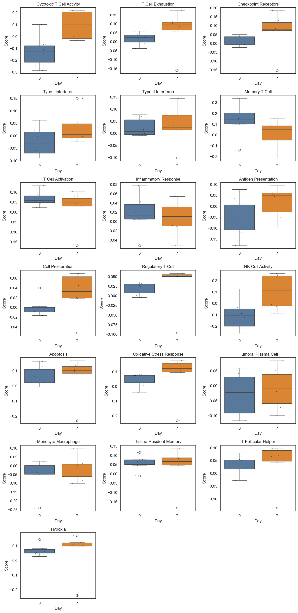
Module-Score Pseudobulk by Cell Type (Within-Arm)#
Here, we aggregate module scores to participant×visit×cell_type (pseudobulk) and test paired Day 0→Day 7 changes within the vaccinated arm for each cell type.
[11]:
if features and len(visits) == 2:
pb_mod = st.module_score_pseudobulk(
adata_analysis,
module_cols=features,
design=design,
visits=tuple(visits),
pool_col="cell_type",
min_cells_per_group=5,
)
res_mod_ct = st.module_score_within_arm_by_pool(
pb_mod,
design=design,
visits=tuple(visits),
min_paired=3,
fdr_within="module",
)
if not res_mod_ct.empty:
display(res_mod_ct.sort_values("p_time").head(20))
pivot = res_mod_ct.pivot(index="module", columns="pool", values="mean_delta")
plt.figure(figsize=(8, max(4, 0.35*len(pivot))))
sns.heatmap(pivot, cmap="RdBu_r", center=0)
plt.title("Module-Score Changes by Cell Type (Day 7 − Day 0)")
plt.tight_layout()
plt.show()
else:
print("No valid pseudobulk module-score results for cell types.")
else:
print("Skipping pseudobulk module-score analysis: insufficient features or visits.")
| pool | module | mean_delta | p_time | n_units | FDR_time | |
|---|---|---|---|---|---|---|
| 44 | C16_NK T | ms_IFN_Signature | 0.127046 | 0.0625 | 5 | 0.118056 |
| 76 | C4_CD16+ monocytes | ms_Memory_T | -0.034321 | 0.0625 | 5 | 0.354167 |
| 68 | C3_CD14+ monocytes | ms_IFN_Signature | 0.074320 | 0.0625 | 5 | 0.118056 |
| 45 | C16_NK T | ms_Inflammatory | -0.194590 | 0.0625 | 5 | 0.118056 |
| 21 | C12_Tregs | ms_Inflammatory | -0.170266 | 0.0625 | 5 | 0.118056 |
| 31 | C14_Plasmablasts | ms_Cytotoxic | 0.549445 | 0.0625 | 5 | 0.354167 |
| 59 | C1_NK | ms_T_Cell_Activation | 0.042359 | 0.0625 | 5 | 0.455357 |
| 80 | C5_B | ms_IFN_Signature | 0.087895 | 0.0625 | 5 | 0.118056 |
| 81 | C5_B | ms_Inflammatory | -0.163149 | 0.0625 | 5 | 0.118056 |
| 33 | C14_Plasmablasts | ms_Inflammatory | -0.111602 | 0.0625 | 5 | 0.118056 |
| 57 | C1_NK | ms_Inflammatory | -0.160659 | 0.0625 | 5 | 0.118056 |
| 85 | C6_CD8 T | ms_Cytotoxic | 0.171548 | 0.0625 | 5 | 0.354167 |
| 74 | C4_CD16+ monocytes | ms_IFN_Signature | 0.163654 | 0.0625 | 5 | 0.118056 |
| 86 | C6_CD8 T | ms_IFN_Signature | 0.071140 | 0.0625 | 5 | 0.118056 |
| 92 | C7_cDC2 | ms_IFN_Signature | 0.102951 | 0.0625 | 5 | 0.118056 |
| 10 | C10_Naive CD8 T | ms_Memory_T | 0.215776 | 0.0625 | 5 | 0.354167 |
| 9 | C10_Naive CD8 T | ms_Inflammatory | -0.170429 | 0.0625 | 5 | 0.118056 |
| 8 | C10_Naive CD8 T | ms_IFN_Signature | 0.060588 | 0.0625 | 5 | 0.118056 |
| 56 | C1_NK | ms_IFN_Signature | 0.076553 | 0.0625 | 5 | 0.118056 |
| 55 | C1_NK | ms_Cytotoxic | 0.241627 | 0.0625 | 5 | 0.354167 |
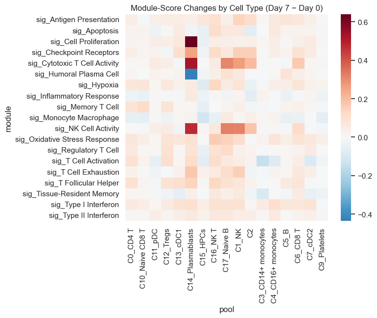
7. Gene Expression Within-Arm (Panel Genes)#
Here, we test targeted panel genes for within‑arm changes using participant‑level aggregation.
[12]:
print("=" * 60)
print("WITHIN-ARM COMPARISONS: PANEL GENES (Day 0 vs Day 7)")
print("=" * 60)
res_genes = pd.DataFrame()
if panel_genes and len(visits) == 2:
ad_sub = adata_analysis[adata_analysis.obs["participant_id"].isin(VALID_PAIRED_IDS)].copy()
res_genes = st.within_arm_comparison(
ad_sub,
arm="All",
features=panel_genes,
design=design,
visits=tuple(visits),
aggregate="participant_visit",
standardize=True,
layer="log1p_cpm",
use_bootstrap=True, # Recommended for small n (6 participants)
n_boot=999,
seed=SEED,
)
if res_genes is not None and not res_genes.empty:
# Use package helper for FDR correction
res_genes = ensure_fdr(res_genes, p_col="p_time", fdr_col="FDR_time")
display_cols = [
"feature", "beta_time", "se_time", "p_time",
"p_time_boot", "se_time_boot", "ci_lo_boot", "ci_hi_boot",
"FDR_time", "n_units",
]
display_cols = [c for c in display_cols if c in res_genes.columns]
display(res_genes[display_cols].round(4))
sig = res_genes[(res_genes["FDR_time"].notna()) & (res_genes["FDR_time"] < FDR_ALPHA)]
if not sig.empty:
print("")
print(f"Panel genes with significant changes (FDR < {FDR_ALPHA}):")
for _, row in sig.iterrows():
direction = "increased" if row["beta_time"] > 0 else "decreased"
print(f" {row['feature']}: {direction} (beta={row['beta_time']:.3f}, FDR={_fmt_fdr(row['FDR_time'])})")
else:
print("")
print(f"No panel genes reached FDR < {FDR_ALPHA}.")
else:
print("No within-arm results for panel genes.")
else:
print("No panel genes available or missing visits.")
print("")
print("Boxplots show participant-level log1p CPM by day; points indicate individual participants.")
# Plot participant-level panel genes by day (log1p CPM)
if panel_genes and len(visits) == 2:
df_expr = adata_analysis.obs[["participant_id", "visit"]].copy()
for g in panel_genes:
df_expr[g] = st.extract_gene_vector(adata_analysis, g, layer="log1p_cpm")
df_plot = (
df_expr
.groupby(["participant_id", "visit"], observed=True)[panel_genes]
.mean()
.reset_index()
)
n_feats = len(panel_genes)
n_cols = min(3, n_feats)
n_rows = (n_feats + n_cols - 1) // n_cols
fig, axes = plt.subplots(n_rows, n_cols, figsize=(4*n_cols, 3.5*n_rows))
axes = np.array(axes).reshape(-1)
for i, feat in enumerate(panel_genes):
ax = axes[i]
sns.boxplot(
data=df_plot,
x="visit",
y=feat,
hue="visit",
ax=ax,
order=visits,
palette={"0": "#4C78A8", "7": "#F58518"},
dodge=False,
linewidth=1,
)
sns.stripplot(
data=df_plot,
x="visit",
y=feat,
ax=ax,
order=visits,
color="black",
size=2,
alpha=0.6,
jitter=0.15,
)
ax.set_title(feat)
ax.set_xlabel("Day")
ax.set_ylabel("log1p CPM")
if ax.legend_:
ax.legend_.remove()
for j in range(i+1, len(axes)):
axes[j].axis("off")
plt.tight_layout()
plt.show()
============================================================
WITHIN-ARM COMPARISONS: PANEL GENES (Day 0 vs Day 7)
============================================================
/var/folders/71/dc4p4yz15s74z9c69xy6sk_00000gt/T/ipykernel_20511/4144594531.py:7: UserWarning: Only 6 clusters (participants) available. Cluster-robust standard errors are unreliable with fewer than 10 clusters.
res_genes = st.within_arm_comparison(
/var/folders/71/dc4p4yz15s74z9c69xy6sk_00000gt/T/ipykernel_20511/4144594531.py:7: UserWarning: Only 6 clusters (participants) available. Cluster-robust standard errors are unreliable with fewer than 10 clusters.
res_genes = st.within_arm_comparison(
/var/folders/71/dc4p4yz15s74z9c69xy6sk_00000gt/T/ipykernel_20511/4144594531.py:7: UserWarning: Only 6 clusters (participants) available. Cluster-robust standard errors are unreliable with fewer than 10 clusters.
res_genes = st.within_arm_comparison(
/var/folders/71/dc4p4yz15s74z9c69xy6sk_00000gt/T/ipykernel_20511/4144594531.py:7: UserWarning: Only 6 clusters (participants) available. Cluster-robust standard errors are unreliable with fewer than 10 clusters.
res_genes = st.within_arm_comparison(
/var/folders/71/dc4p4yz15s74z9c69xy6sk_00000gt/T/ipykernel_20511/4144594531.py:7: UserWarning: Only 6 clusters (participants) available. Cluster-robust standard errors are unreliable with fewer than 10 clusters.
res_genes = st.within_arm_comparison(
/var/folders/71/dc4p4yz15s74z9c69xy6sk_00000gt/T/ipykernel_20511/4144594531.py:7: UserWarning: Only 6 clusters (participants) available. Cluster-robust standard errors are unreliable with fewer than 10 clusters.
res_genes = st.within_arm_comparison(
/var/folders/71/dc4p4yz15s74z9c69xy6sk_00000gt/T/ipykernel_20511/4144594531.py:7: UserWarning: Only 6 clusters (participants) available. Cluster-robust standard errors are unreliable with fewer than 10 clusters.
res_genes = st.within_arm_comparison(
/var/folders/71/dc4p4yz15s74z9c69xy6sk_00000gt/T/ipykernel_20511/4144594531.py:7: UserWarning: Only 6 clusters (participants) available. Cluster-robust standard errors are unreliable with fewer than 10 clusters.
res_genes = st.within_arm_comparison(
/var/folders/71/dc4p4yz15s74z9c69xy6sk_00000gt/T/ipykernel_20511/4144594531.py:7: UserWarning: Only 6 clusters (participants) available. Cluster-robust standard errors are unreliable with fewer than 10 clusters.
res_genes = st.within_arm_comparison(
/var/folders/71/dc4p4yz15s74z9c69xy6sk_00000gt/T/ipykernel_20511/4144594531.py:7: UserWarning: Only 6 clusters (participants) available. Cluster-robust standard errors are unreliable with fewer than 10 clusters.
res_genes = st.within_arm_comparison(
/var/folders/71/dc4p4yz15s74z9c69xy6sk_00000gt/T/ipykernel_20511/4144594531.py:7: UserWarning: Only 6 clusters (participants) available. Cluster-robust standard errors are unreliable with fewer than 10 clusters.
res_genes = st.within_arm_comparison(
/var/folders/71/dc4p4yz15s74z9c69xy6sk_00000gt/T/ipykernel_20511/4144594531.py:7: UserWarning: Only 6 clusters (participants) available. Cluster-robust standard errors are unreliable with fewer than 10 clusters.
res_genes = st.within_arm_comparison(
/var/folders/71/dc4p4yz15s74z9c69xy6sk_00000gt/T/ipykernel_20511/4144594531.py:7: UserWarning: Only 6 clusters (participants) available. Cluster-robust standard errors are unreliable with fewer than 10 clusters.
res_genes = st.within_arm_comparison(
/var/folders/71/dc4p4yz15s74z9c69xy6sk_00000gt/T/ipykernel_20511/4144594531.py:7: UserWarning: Only 6 clusters (participants) available. Cluster-robust standard errors are unreliable with fewer than 10 clusters.
res_genes = st.within_arm_comparison(
/var/folders/71/dc4p4yz15s74z9c69xy6sk_00000gt/T/ipykernel_20511/4144594531.py:7: UserWarning: Only 6 clusters (participants) available. Cluster-robust standard errors are unreliable with fewer than 10 clusters.
res_genes = st.within_arm_comparison(
/var/folders/71/dc4p4yz15s74z9c69xy6sk_00000gt/T/ipykernel_20511/4144594531.py:7: UserWarning: Only 6 clusters (participants) available. Cluster-robust standard errors are unreliable with fewer than 10 clusters.
res_genes = st.within_arm_comparison(
/var/folders/71/dc4p4yz15s74z9c69xy6sk_00000gt/T/ipykernel_20511/4144594531.py:7: UserWarning: Only 6 clusters (participants) available. Cluster-robust standard errors are unreliable with fewer than 10 clusters.
res_genes = st.within_arm_comparison(
/var/folders/71/dc4p4yz15s74z9c69xy6sk_00000gt/T/ipykernel_20511/4144594531.py:7: UserWarning: Only 6 clusters (participants) available. Cluster-robust standard errors are unreliable with fewer than 10 clusters.
res_genes = st.within_arm_comparison(
/var/folders/71/dc4p4yz15s74z9c69xy6sk_00000gt/T/ipykernel_20511/4144594531.py:7: UserWarning: Only 6 clusters (participants) available. Cluster-robust standard errors are unreliable with fewer than 10 clusters.
res_genes = st.within_arm_comparison(
| feature | beta_time | se_time | p_time | p_time_boot | se_time_boot | ci_lo_boot | ci_hi_boot | FDR_time | n_units | |
|---|---|---|---|---|---|---|---|---|---|---|
| 0 | CD79A | -0.2768 | 0.3962 | 0.427 | 0.427 | 0.2591 | -1.2937 | 0.3502 | 0.7375 | 6 |
| 1 | CD79B | 0.2965 | 0.3855 | 0.293 | 0.293 | 0.2574 | -0.3634 | 0.9564 | 0.6422 | 6 |
| 2 | MS4A1 | -0.4912 | 0.2044 | 0.071 | 0.071 | 0.2352 | -0.9824 | 0.0000 | 0.2698 | 6 |
| 3 | MZB1 | 0.1200 | 0.4993 | 0.710 | 0.710 | 0.3022 | -0.7010 | 0.7794 | 0.8993 | 6 |
| 4 | XBP1 | 0.4798 | 0.6779 | 0.338 | 0.338 | 0.4441 | -0.6366 | 1.5963 | 0.6422 | 6 |
| 5 | ISG15 | 1.1085 | 0.4714 | 0.042 | 0.042 | 0.5085 | 0.2535 | 1.9635 | 0.1995 | 6 |
| 6 | IFI6 | 0.8359 | 0.1878 | 0.013 | 0.013 | 0.3461 | 0.5357 | 1.1361 | 0.1235 | 6 |
| 7 | IFIT1 | 0.3859 | 0.5645 | 0.312 | 0.312 | 0.3626 | -0.5277 | 1.2996 | 0.6422 | 6 |
| 8 | MX1 | 0.1928 | 0.4423 | 0.498 | 0.498 | 0.2729 | -0.5749 | 1.1062 | 0.7885 | 6 |
| 9 | S100A8 | -0.0273 | 1.1353 | 0.988 | 0.988 | 0.6959 | -1.7140 | 1.4773 | 0.9880 | 6 |
| 10 | S100A9 | -0.0694 | 1.1747 | 0.914 | 0.914 | 0.7196 | -1.7879 | 1.6492 | 0.9648 | 6 |
| 11 | LYZ | -0.1502 | 1.1776 | 0.807 | 0.807 | 0.7199 | -1.9382 | 1.6378 | 0.9142 | 6 |
| 12 | VCAN | -0.4103 | 1.1010 | 0.641 | 0.641 | 0.6907 | -2.5379 | 1.0782 | 0.8993 | 6 |
| 13 | CD69 | -0.4415 | 1.0923 | 0.709 | 0.709 | 0.7009 | -1.9212 | 1.0382 | 0.8993 | 6 |
| 14 | CD38 | 0.7758 | 0.7686 | 0.148 | 0.148 | 0.5447 | -0.4501 | 2.0018 | 0.4017 | 6 |
| 15 | IL2RA | 0.1781 | 0.9794 | 0.818 | 0.818 | 0.5992 | -1.6672 | 2.0233 | 0.9142 | 6 |
| 16 | GZMB | 1.0583 | 0.6385 | 0.086 | 0.086 | 0.5845 | -0.0109 | 2.1275 | 0.2723 | 6 |
| 17 | PRF1 | 0.9534 | 0.4088 | 0.025 | 0.025 | 0.4497 | 0.1868 | 1.5973 | 0.1583 | 6 |
| 18 | NKG7 | 1.1979 | 0.6640 | 0.001 | 0.001 | 0.6379 | 0.0210 | 2.3747 | 0.0190 | 6 |
Panel genes with significant changes (FDR < 0.25):
ISG15: increased (beta=1.108, FDR=0.200)
IFI6: increased (beta=0.836, FDR=0.123)
PRF1: increased (beta=0.953, FDR=0.158)
NKG7: increased (beta=1.198, FDR=0.019)
Boxplots show participant-level log1p CPM by day; points indicate individual participants.
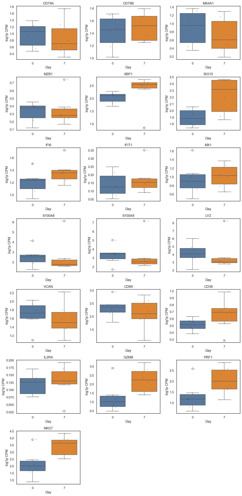
8. Pseudobulk Within-Arm (Panel Genes)#
Here, we aggregate counts to pseudobulk profiles and quantify gene‑level shifts by cell type.
Exploratory only: With permissive thresholds (
min_cells_per_group=5,min_paired=3), many cell-type pools have very few paired observations (n≈5), producing discrete p-value distributions and unstable estimates. Treat these as hypothesis-generating, not confirmatory.
[13]:
# Note: scipy.stats.wilcoxon warns 'Sample size too small for normal approximation'
# when n <= 20, but uses exact p-values internally — the results are correct.
import warnings as _w
_w.filterwarnings('ignore', message='Sample size too small', category=UserWarning)
from scipy.stats import wilcoxon
if panel_genes and n_paired >= MIN_PAIRED and len(visits) == 2:
# Use package helper for pseudobulk within-arm analysis
pb, pb_deltas = st.pseudobulk_within_arm(
adata_analysis,
genes=panel_genes,
participant_col="participant_id",
visit_col=design.visit_col,
visits=visits,
celltype_col=design.celltype_col,
counts_layer="counts",
min_paired=MIN_PAIRED,
)
if not pb.empty:
print("Pseudobulk paired deltas with Wilcoxon signed-rank test (panel genes × cell type):")
display(pb.sort_values(["p_time"]).head(30))
sig = pb[(pb["FDR_time"].notna()) & (pb["FDR_time"] < FDR_ALPHA)]
if not sig.empty:
print("")
print(f"Significant pseudobulk changes (FDR < {FDR_ALPHA}):")
for _, row in sig.iterrows():
direction = "↑" if row["mean_delta"] > 0 else "↓"
print(f" {row['celltype']} - {row['feature']}: {direction} (delta={row['mean_delta']:.3f}, FDR={_fmt_fdr(row['FDR_time'])})")
else:
print("No pseudobulk results generated.")
# Pseudobulk heatmap (mean delta by cell type × gene)
if not pb.empty:
sns.set_style("white")
pivot = pb.pivot(index="feature", columns="celltype", values="mean_delta")
plt.figure(figsize=(10, max(4, 0.35*len(pivot))))
ax = plt.gca()
sns.heatmap(
pivot,
cmap="RdBu_r",
center=0,
cbar_kws={"label": "Mean Δ (Day7-Day0)"},
linewidths=0,
linecolor="none",
)
ax.set_axisbelow(False)
plt.title("Pseudobulk Mean Delta by Cell Type")
plt.xlabel("Cell type")
plt.ylabel("Gene")
plt.tight_layout()
plt.show()
# Distribution plots for top genes (by absolute mean delta)
if not pb.empty and not pb_deltas.empty:
top_genes = (
pb.assign(abs_delta=pb["mean_delta"].abs())
.sort_values("abs_delta", ascending=False)
.head(6)["feature"].unique()
)
plot_df = pb_deltas[pb_deltas["feature"].isin(top_genes)].copy()
if not plot_df.empty:
g = sns.catplot(
data=plot_df,
x="celltype",
y="delta",
col="feature",
kind="box",
col_wrap=3,
sharey=False,
height=3,
)
g.set_titles("{col_name}")
g.set_xticklabels(rotation=45, ha="right")
g.set_axis_labels("Cell type", "Δ (Day7-Day0)")
plt.tight_layout()
plt.show()
else:
print("Insufficient paired participants for pseudobulk.")
Pseudobulk paired deltas with Wilcoxon signed-rank test (panel genes × cell type):
| celltype | feature | n_units | mean_delta | median_delta | p_time | FDR_time | |
|---|---|---|---|---|---|---|---|
| 69 | C6_CD8 T | VCAN | 6 | -1.062615 | -1.030314 | 0.031250 | 0.326838 |
| 74 | C6_CD8 T | PRF1 | 6 | 0.617359 | 0.488505 | 0.031250 | 0.326838 |
| 75 | C6_CD8 T | NKG7 | 6 | 0.367804 | 0.298231 | 0.031250 | 0.326838 |
| 25 | C3_CD14+ monocytes | IFI6 | 6 | 0.428861 | 0.122172 | 0.031250 | 0.326838 |
| 27 | C3_CD14+ monocytes | MX1 | 6 | 0.349177 | 0.244993 | 0.031250 | 0.326838 |
| 32 | C3_CD14+ monocytes | CD69 | 6 | -0.905529 | -0.860747 | 0.031250 | 0.326838 |
| 36 | C3_CD14+ monocytes | PRF1 | 6 | -0.309773 | -0.350772 | 0.043114 | 0.326838 |
| 201 | C9_Platelets | LYZ | 5 | -1.036649 | -1.036991 | 0.062500 | 0.326838 |
| 270 | C12_Tregs | XBP1 | 5 | -0.368027 | -0.220880 | 0.062500 | 0.326838 |
| 274 | C12_Tregs | MX1 | 5 | 1.676067 | 1.203632 | 0.062500 | 0.326838 |
| 275 | C12_Tregs | S100A8 | 5 | -1.525288 | -1.673220 | 0.062500 | 0.326838 |
| 276 | C12_Tregs | S100A9 | 5 | -1.417875 | -1.580606 | 0.062500 | 0.326838 |
| 143 | C5_B | S100A9 | 5 | -1.497778 | -1.237037 | 0.062500 | 0.326838 |
| 277 | C12_Tregs | LYZ | 5 | -1.847370 | -1.804193 | 0.062500 | 0.326838 |
| 141 | C5_B | MX1 | 5 | 0.199000 | 0.157742 | 0.062500 | 0.326838 |
| 142 | C5_B | S100A8 | 5 | -1.525760 | -1.447638 | 0.062500 | 0.326838 |
| 105 | C1_NK | S100A9 | 5 | -1.492362 | -1.526757 | 0.062500 | 0.326838 |
| 294 | C17_Naive B | S100A8 | 5 | -2.814811 | -2.584364 | 0.062500 | 0.326838 |
| 49 | C10_Naive CD8 T | LYZ | 5 | -1.502563 | -1.387574 | 0.062500 | 0.326838 |
| 48 | C10_Naive CD8 T | S100A9 | 5 | -1.651697 | -1.466530 | 0.062500 | 0.326838 |
| 47 | C10_Naive CD8 T | S100A8 | 5 | -1.387385 | -1.265103 | 0.062500 | 0.326838 |
| 65 | C6_CD8 T | MX1 | 6 | 0.553320 | 0.270780 | 0.062500 | 0.326838 |
| 58 | C6_CD8 T | CD79B | 6 | 0.726657 | 0.510624 | 0.062500 | 0.326838 |
| 202 | C9_Platelets | VCAN | 5 | -1.334796 | -0.983637 | 0.062500 | 0.326838 |
| 73 | C6_CD8 T | GZMB | 6 | 0.581737 | 0.489481 | 0.062500 | 0.326838 |
| 104 | C1_NK | S100A8 | 5 | -1.393820 | -1.332844 | 0.062500 | 0.326838 |
| 107 | C1_NK | VCAN | 5 | -1.112814 | -1.184198 | 0.062500 | 0.326838 |
| 109 | C1_NK | CD38 | 5 | 0.165797 | 0.101300 | 0.062500 | 0.326838 |
| 101 | C1_NK | IFI6 | 5 | 0.114627 | 0.119478 | 0.062500 | 0.326838 |
| 112 | C1_NK | PRF1 | 5 | 0.277160 | 0.159133 | 0.062500 | 0.326838 |
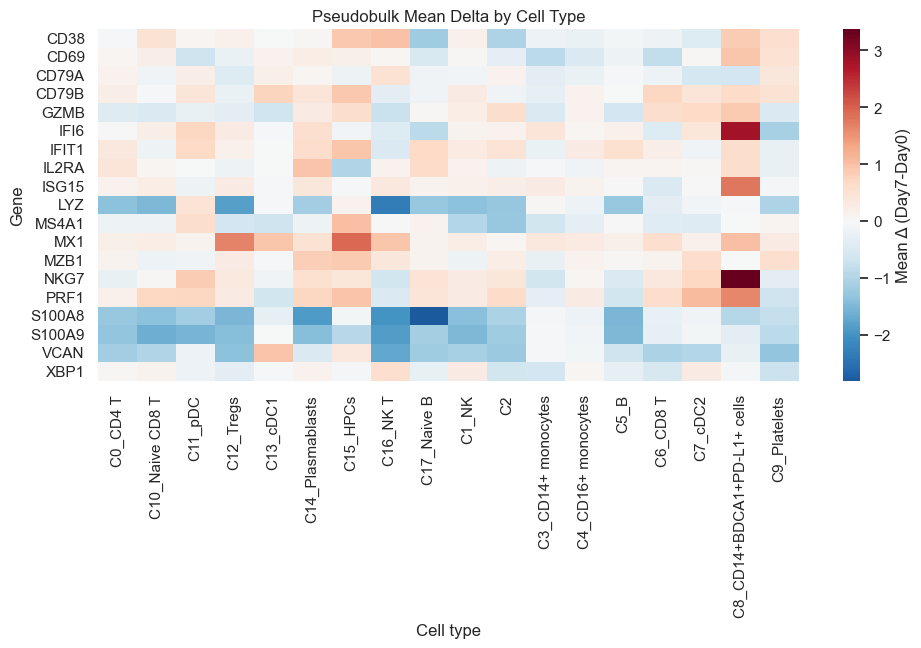

9. Trial Interaction Plot (Single Arm)#
Here, we visualize paired trajectories to interpret direction and magnitude of change.
Note: The plot below shows trajectories for the first module score (
features[0]). Change the index to visualize other modules.
[14]:
if features and len(visits) == 2:
fig, ax = plt.subplots(1, 1, figsize=(5, 4))
st.plot_within_arm_comparison(
adata_analysis,
arm="All",
feature=features[0],
design=design,
visits=tuple(visits),
plot_type="paired",
ax=ax,
)
plt.tight_layout(); plt.show()
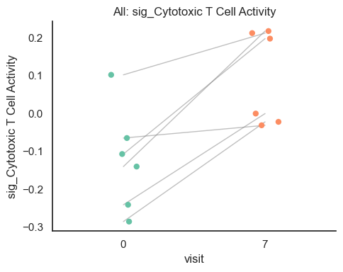
10. Trial UMAP Panel for a Module Score#
Here, we overlay a module score on the UMAP to localize signal to specific cell populations.
[15]:
if features:
modules = features[:4]
if "X_umap" not in adata_analysis.obsm:
# Ensure UMAP is computed on log1p_cpm (same as Section 4)
adata_analysis.X = adata_analysis.layers["log1p_cpm"].copy()
sc.pp.pca(adata_analysis)
sc.pp.neighbors(adata_analysis)
sc.tl.umap(adata_analysis)
fig = st.plot_module_umap_panel(
adata_analysis,
module_cols=modules,
celltype_col="cell_type",
umap_key="X_umap",
n_cols=2,
figsize=(10, 8),
point_size=6,
alpha=0.7,
)
plt.show()
else:
print("No module scores available for UMAP panel.")
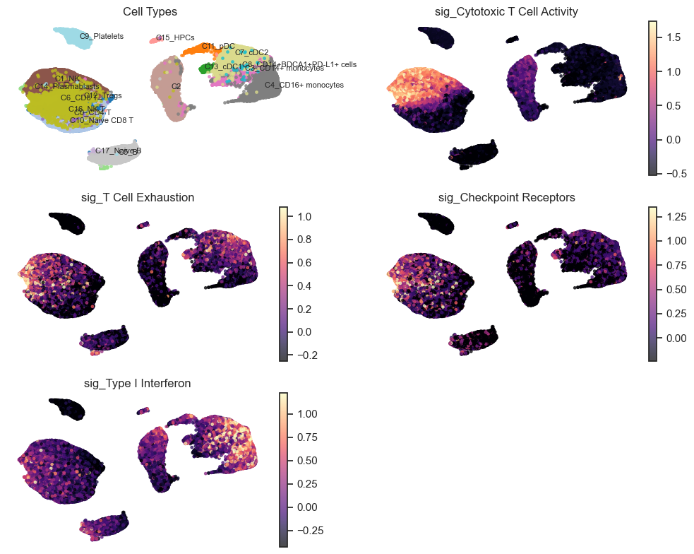
11. Dotplot of Panel Genes#
Here, we summarize gene expression patterns across visits (Day 0 vs Day 7) in a compact dotplot.
[16]:
if panel_genes:
sc.pl.dotplot(
adata_analysis,
panel_genes,
groupby=design.visit_col,
standard_scale="var",
use_raw=False,
)
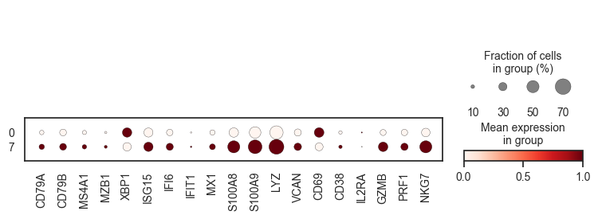
12. Advanced Statistical Analyses#
This section demonstrates the new statistical modules for within-arm longitudinal studies:
Effect sizes: Cohen’s d for paired within-arm changes
Power analysis: Current power and sample size planning
Effective sample size: Accounting for cell-level clustering
12.1 Effect Sizes for Within-Arm Changes#
For within-arm paired studies, paired effect sizes quantify the magnitude of change from baseline.
[17]:
print("=" * 60)
print("EFFECT SIZE ANALYSIS (Within-Arm)")
print("=" * 60)
if features and len(visits) == 2:
# Aggregate to participant-visit level
df_agg = (
adata_analysis.obs[adata_analysis.obs["participant_id"].isin(VALID_PAIRED_IDS)]
.groupby(["participant_id", "visit"], observed=True)[features]
.mean()
.reset_index()
)
effect_results = []
for feat in features:
# Pivot to wide format
wide = df_agg.pivot(index="participant_id", columns="visit", values=feat)
if visits[0] not in wide.columns or visits[1] not in wide.columns:
continue
wide = wide.dropna()
pre_vals = wide[visits[0]].values
post_vals = wide[visits[1]].values
if len(pre_vals) >= 3:
# Paired effect size: standardized mean of within-subject differences
delta = post_vals - pre_vals
sd_delta = delta.std(ddof=1)
d_paired = delta.mean() / sd_delta if sd_delta > 0 else np.nan
# Hedge's correction for small-sample bias (paired df = n-1)
n = len(delta)
j = 1 - 3 / (4 * (n - 1) - 1) if n > 2 else 1.0
g_paired = d_paired * j if not np.isnan(d_paired) else np.nan
# Bootstrap CI for paired effect size
rng = np.random.default_rng(SEED)
boot_ds = []
for _ in range(999):
idx = rng.choice(n, size=n, replace=True)
d_boot = delta[idx]
sd_b = d_boot.std(ddof=1)
boot_ds.append(d_boot.mean() / sd_b * j if sd_b > 0 else np.nan)
boot_ds = np.array(boot_ds)
boot_ds = boot_ds[np.isfinite(boot_ds)]
ci_low = np.percentile(boot_ds, 2.5) if len(boot_ds) > 0 else np.nan
ci_high = np.percentile(boot_ds, 97.5) if len(boot_ds) > 0 else np.nan
effect_results.append({
"feature": feat,
"mean_delta": delta.mean(),
"d_paired": d_paired,
"g_paired": g_paired,
"ci_lower": ci_low,
"ci_upper": ci_high,
"n_paired": len(pre_vals),
})
if effect_results:
df_effect = pd.DataFrame(effect_results)
print("\nEffect sizes for Day 0 → Day 7 changes:")
print(" d_paired: standardized within-subject change (delta_mean / sd_delta)")
print(" g_paired: bias-corrected paired effect size (Hedge's J correction)")
print("")
display(df_effect.round(3))
# Visualize
fig, ax = plt.subplots(figsize=(8, 5))
y_pos = np.arange(len(df_effect))
ax.barh(y_pos, df_effect["g_paired"], xerr=[
df_effect["g_paired"] - df_effect["ci_lower"],
df_effect["ci_upper"] - df_effect["g_paired"]
], capsize=5, color=["coral" if g > 0 else "steelblue" for g in df_effect["g_paired"]])
ax.axvline(0, color="black", linewidth=0.5)
ax.set_yticks(y_pos)
ax.set_yticklabels(df_effect["feature"])
ax.set_xlabel("Paired Hedge's g (95% Bootstrap CI)")
ax.set_title("Effect Sizes: Day 7 vs Day 0")
# Reference lines
for thresh in [-0.8, -0.5, -0.2, 0.2, 0.5, 0.8]:
ax.axvline(thresh, color="gray", linestyle=":", alpha=0.5)
plt.tight_layout()
plt.show()
else:
print("Effect size analysis requires paired visits.")
============================================================
EFFECT SIZE ANALYSIS (Within-Arm)
============================================================
Effect sizes for Day 0 → Day 7 changes:
d_paired: standardized within-subject change (delta_mean / sd_delta)
g_paired: bias-corrected paired effect size (Hedge's J correction)
| feature | mean_delta | d_paired | g_paired | ci_lower | ci_upper | n_paired | |
|---|---|---|---|---|---|---|---|
| 0 | ms_B_Cell_Response | 0.003 | 0.034 | 0.029 | -0.792 | 0.929 | 6 |
| 1 | ms_IFN_Signature | 0.058 | 0.817 | 0.688 | 0.067 | 2.058 | 6 |
| 2 | ms_Inflammatory | -0.030 | -0.100 | -0.085 | -1.801 | 0.511 | 6 |
| 3 | ms_T_Cell_Activation | 0.006 | 0.226 | 0.190 | -0.422 | 5.010 | 6 |
| 4 | ms_Cytotoxic | 0.265 | 1.315 | 1.108 | 0.651 | 3.278 | 6 |
| 5 | ms_Memory_T | -0.163 | -0.541 | -0.455 | -1.382 | 0.333 | 6 |
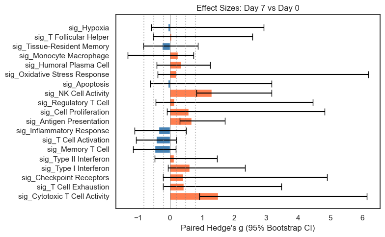
12.2 Power Analysis#
Power analysis for within-arm studies helps plan future studies and understand current study limitations.
[18]:
print("=" * 60)
print("POWER ANALYSIS (Within-Arm Paired Design)")
print("=" * 60)
# Use sctrial's paired power functions (single-arm pre/post design).
# These are the correct functions for a paired study — do NOT use
# power_did() which assumes a two-arm DiD design.
# Current sample size
n_paired = N_VALID_PAIRED
print(f"\nCurrent paired sample size: {n_paired} participants")
# Power for different effect sizes
print(f"\nPower with n={n_paired} paired participants (paired t-test):")
for effect_size in [0.5, 0.8, 1.0, 1.5, 2.0]:
pwr = st.power_paired(n_participants=n_paired, effect_size=effect_size)
print(f" Effect size d={effect_size}: {pwr:.1%} power")
# Sample sizes needed for 80% power
print("\nSample size needed for 80% power (paired design):")
for effect_size in [0.5, 0.8, 1.0, 1.5, 2.0]:
n_needed = st.sample_size_paired(effect_size=effect_size, power=0.80)
print(f" Effect size d={effect_size}: {n_needed} participants")
# Power curve visualization
fig, axes = plt.subplots(1, 2, figsize=(12, 5))
# Power curve across sample sizes
n_range = np.arange(3, 31)
for effect_size, color in [(0.5, "blue"), (0.8, "green"), (1.0, "orange"), (1.5, "red")]:
powers = [st.power_paired(n_participants=n, effect_size=effect_size) for n in n_range]
axes[0].plot(n_range, powers, label=f"d={effect_size}", color=color, linewidth=2)
axes[0].axhline(0.8, color="black", linestyle="--", alpha=0.5, label="80% power")
axes[0].axvline(n_paired, color="gray", linestyle=":", label=f"Current n={n_paired}")
axes[0].set_xlabel("Sample size (paired participants)")
axes[0].set_ylabel("Power")
axes[0].set_title("Power Curves by Effect Size (Paired Design)")
axes[0].legend(loc="lower right")
axes[0].set_ylim(0, 1)
axes[0].grid(True, alpha=0.3)
# Power with current sample across effect sizes
effect_range = np.linspace(0.2, 3.0, 50)
power_current = [st.power_paired(n_participants=n_paired, effect_size=e) for e in effect_range]
axes[1].plot(effect_range, power_current, linewidth=2, color="steelblue")
axes[1].axhline(0.8, color="black", linestyle="--", alpha=0.5)
axes[1].fill_between(effect_range, 0, power_current, alpha=0.2)
axes[1].set_xlabel("Effect size (Cohen's d)")
axes[1].set_ylabel("Power")
axes[1].set_title(f"Power with Current Sample (n={n_paired})")
axes[1].set_ylim(0, 1)
axes[1].grid(True, alpha=0.3)
# Mark minimum detectable effect
mde = st.sensitivity_paired(n_participants=n_paired, power=0.80)
axes[1].axvline(mde, color="coral", linestyle=":",
label=f"Min detectable d={mde:.2f}")
axes[1].legend()
plt.tight_layout()
plt.show()
# Effective sample size
print("\n" + "=" * 60)
print("EFFECTIVE SAMPLE SIZE")
print("=" * 60)
cells_per_participant = adata_analysis.obs.groupby("participant_id").size()
avg_cells = cells_per_participant.mean()
total_cells = adata_analysis.n_obs
n_participants = adata_analysis.obs["participant_id"].nunique()
print(f"\nParticipants: {n_participants}")
print(f"Total cells: {total_cells:,}")
print(f"Average cells per participant: {avg_cells:.0f}")
print("\nDesign effect and effective sample size (cells within participant):")
print(" n_clusters = number of participants (not total cells)")
for icc in [0.01, 0.05, 0.10, 0.20]:
de = st.design_effect(avg_cells, icc)
eff_n = st.effective_sample_size(n_participants, avg_cells, icc)
print(f" ICC={icc}: Design effect={de:.1f}, Effective n={eff_n:.0f}")
print("\nNote: Participant-level aggregation accounts for clustering automatically.")
============================================================
POWER ANALYSIS (Within-Arm Paired Design)
============================================================
Current paired sample size: 6 participants
Power with n=6 paired participants (paired t-test):
Effect size d=0.5: 13.9% power
Effect size d=0.8: 28.3% power
Effect size d=1.0: 41.0% power
Effect size d=1.5: 73.8% power
Effect size d=2.0: 93.4% power
Sample size needed for 80% power (paired design):
Effect size d=0.5: 63 participants
Effect size d=0.8: 25 participants
Effect size d=1.0: 16 participants
Effect size d=1.5: 7 participants
Effect size d=2.0: 4 participants
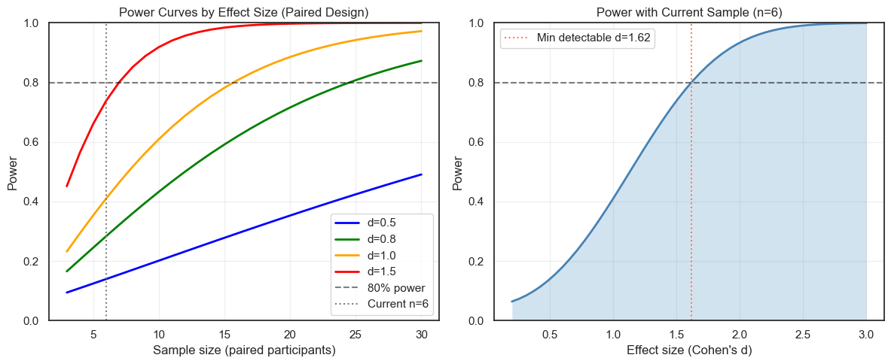
============================================================
EFFECTIVE SAMPLE SIZE
============================================================
Participants: 6
Total cells: 78,488
Average cells per participant: 13081
Design effect and effective sample size (cells within participant):
n_clusters = number of participants (not total cells)
ICC=0.01: Design effect=131.8, Effective n=595
ICC=0.05: Design effect=655.0, Effective n=120
ICC=0.1: Design effect=1309.0, Effective n=60
ICC=0.2: Design effect=2617.1, Effective n=30
Note: Participant-level aggregation accounts for clustering automatically.
Pseudobulk Export#
Here we export participant-level pseudobulk expression for downstream analyses.
[19]:
pb = st.pseudobulk_export(
adata_analysis,
genes=panel_genes[:5] if panel_genes else adata_analysis.var_names[:5],
design=design,
visits=tuple(visits),
celltype_col=design.celltype_col,
)
print(pb)
display(pb.obs.head())
AnnData object with n_obs × n_vars = 202 × 5
obs: 'participant_id', 'visit', 'cell_type'
/opt/anaconda3/lib/python3.12/functools.py:907: ImplicitModificationWarning: Transforming to str index.
return dispatch(args[0].__class__)(*args, **kw)
| participant_id | visit | cell_type | |
|---|---|---|---|
| 0 | 2047 | 0 | C0_CD4 T |
| 1 | 2047 | 0 | C3_CD14+ monocytes |
| 2 | 2047 | 0 | C10_Naive CD8 T |
| 3 | 2047 | 0 | C6_CD8 T |
| 4 | 2047 | 0 | C4_CD16+ monocytes |